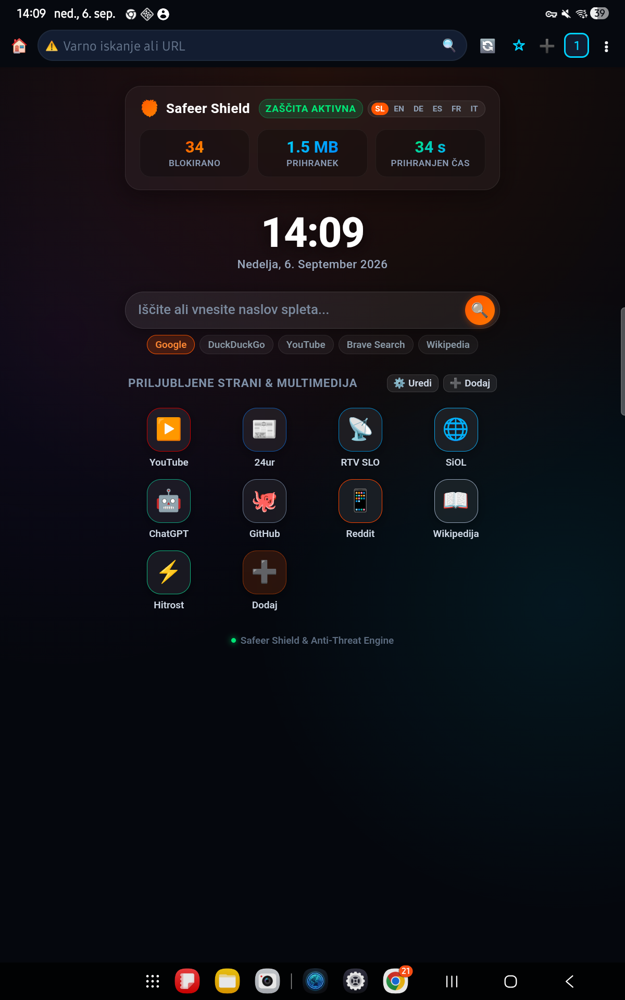
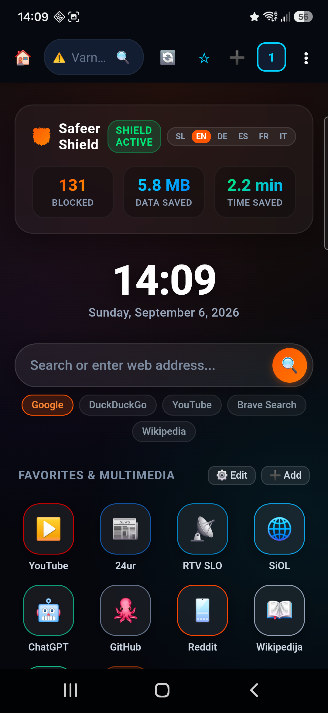

Uživajte v glasbi na YouTubu tudi z ugasnjenim zaslonom ali med uporabo drugih aplikacij. Safeer Mobile prinaša vgrajeno zaščito pred sledilci, blokado video oglasov in takojšen dostop do vaših priljubljenih portalov tako na telefonu kot na tablici.


Predvajajte katero koli glasbo, podcaste ali videe. Ko ugasnete zaslon telefona ali preklopite v drugo aplikacijo, se predvajanje nadaljuje brez prekinitev.
Na domačem zaslonu v živo spremljajte število blokiranih oglasov, prihranjen prenos podatkov v megabajtih in prihranjen čas brskanja.
Prilagodljiva mrežna postavitev (Responsive Bento). Na telefonu omogoča enoročno upravljanje, na tablici pa izkoristi celotno širino zaslona.
Domači zaslon s priljubljenimi portali (YouTube, 24ur, RTV SLO, SiOL, ChatGPT, Wikipedia) za takojšen skok na vsebino brez nepotrebnega tipkanja.
| Funkcionalnost | 🛡️ Safeer Mobile | Google Chrome | Samsung Internet | Opera |
|---|---|---|---|---|
| YouTube v ozadju z ugasnjenim zaslonom | ✓ Vgrajeno brezplačno | ✗ Zahteva YouTube Premium | ✗ Se zaustavi ob zaklepu | ✗ Se zaustavi |
| Blokada video oglasov na YouTube | ✓ Blokada oglasov | ✗ Vsi oglasi | ✗ Potreben zunanji vtičnik | Delno blokiranje |
| C2 Botnet & Phishing ščit (abuse.ch) | ✓ Lokalni (k)$ trie | ✗ Oblačni filter | ✗ Osnovni filter | ✗ Brez zaščite |
| Velikost namestitvenega paketa | ✓ Samo 1.7 MB | ~120 MB | ~85 MB | ~60 MB |
| Zasebnost in telemetrija | ✓ 0 zunanjega sledenja | Sledenje podatkom in oglasom | Analitika naprave | Trženjska analitika |
Safeer je na voljo tudi za računalnike in televizorje: